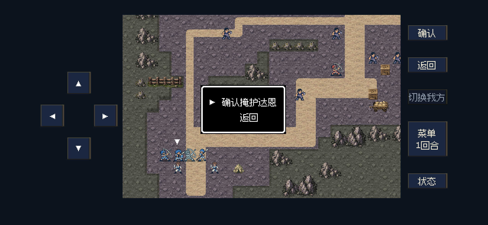
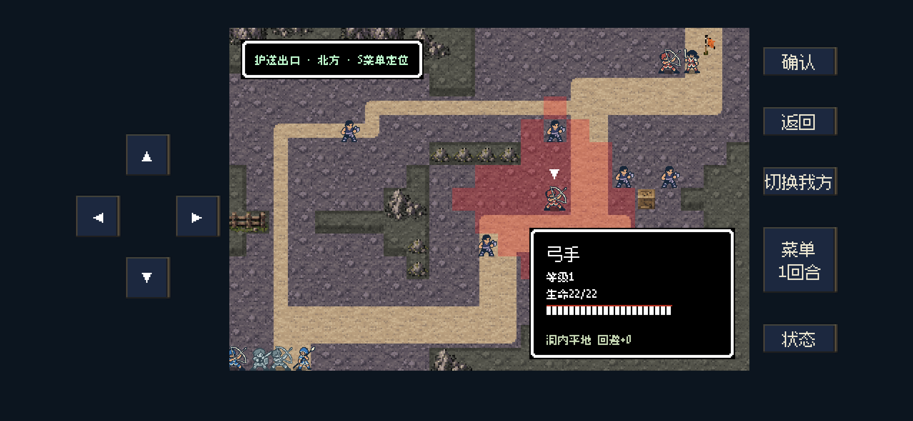

掩护限制与矿道弓手
只能掩护相邻且本回合已行动的存活队友。选人后直接二次确认，返回不消耗行动；不再自动播放两页规则。
S11东北主巷侧面(17,11)新增一名普通弓手：生命22、力量9、速度3、移动4、射程1～3格，使用新版形象。初始敌军共8名。进行中的旧档保持当前兵力，新开或正常重试后采用新部署。
31项定向检查、14项后台呈现检查、29项掩护回归和89项战场机制回归通过。S11正常输入15回合、401次按键通关；达恩、奥托濒死，矿工与战后流程完成。未更新iPhone。
修改依据与验证范围 · 规则／输入检查 · 呈现检查 · 通关摘要
掩护：直接显示“确认掩护达恩／返回”，没有强制说明页
新增敌方弓手：东北主巷侧面，使用现有新版弓手形象